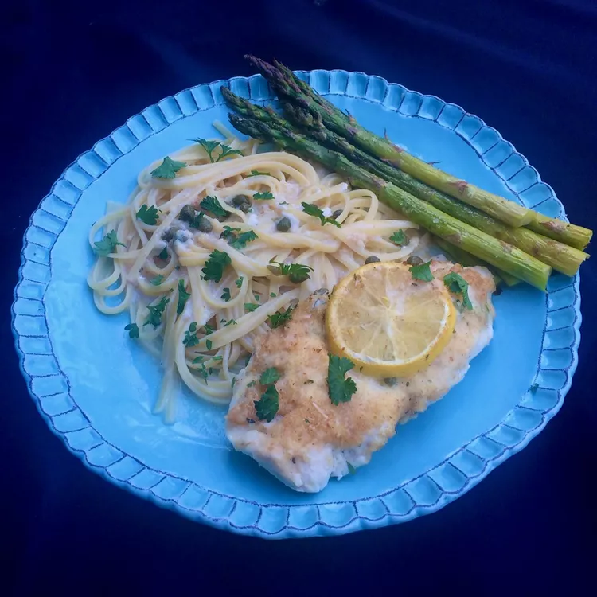

Chicken Piccata Casserole

Description
I love chicken piccata, but I don't love cooking it on top of the stove. Get the great piquant taste of chicken piccata, without the spatters, in the oven! It's more convenient, and it frees you up to tend to the other parts of dinner, like some tasty pasta, and maybe a vegetable or a salad.
Ingredients
- cooking spray
- 2 tablespoons unsalted butter
- 2 tablespoons all-purpose flour
- and others...........
Steps
- Preheat the oven to 375 degrees F (190 degrees C). Spray a 9x13-inch casserole dish with cooking spray.
- Melt butter in a medium skillet over medium heat. Stir in flour and garlic; stir constantly until garlic is fragrant and flour is mixed well, about 1 minute. Pour in chicken broth and half-and-half. Bring to a boil, stirring frequently, until sauce is bubbly and thick, about 5 minutes.
- Remove the skillet from heat and stir in 1/2 cup Parmesan cheese, lemon juice, capers, salt, and pepper. Set aside.